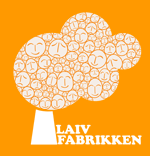

Laiv som rollearbeid - laboratorium AVLYST
- Dato:
- 02.03.2013 til 02.03.2013
- Start kl :
- 10:00
- Slutt kl :
- 20:00
- Pris:
- 200,-
- Adresse:
- Norsk Skuespillersenter, Welhavensgate 1, Oslo
 Laiv som rollearbeid er dessverre avlyst.
{kind=link}
Kan laiv brukes som rollearbeid for skuespillere?
Norsk Skuespillersenteret og Laivfabrikken samarbeider om dette eksperimentet, og håper på mange nysgjerrige påmeldte! Spilledere er Tor Kjetil Edland og Martin Nielsen.
Om laiv
Ordet "laiv" er en fornorsking av "live" i engelske "live action role-playing", også kjent som "larp". Laiv er en type improvisert drama som foregår uten publikum, og uten fastlagt manus. Hver deltager har en rolle, en fiktiv person de later som de er gjennom hele spillets varighet.
Laiv vs. skuespillerarbeid
Det er åpenbart at laiving og skuespillerarbeid overlapper. Begge deler handler om å leve seg inn i hvordan det er å være et annet menneske. Men i en laivsituasjon er det ikke noe publikum, fokuset ligger i stedet på opplevelsen innenfra.
Finnes det et potensiale for å bruke dette som teknikk i utviklingen av en rollefigur? Bør skuespillere og regissører gjøre laiving til en vanlig del av enhver prøveperiode? Kan man trekke veksel på laivere og laivmiljøet i utforskingen av et manus og en forestillingsverden?
Dagens gang
10.00 – Innledning om hva laiv er og hvordan laivere forholder seg til rollene sine, med Tor Kjetil Edland fra Laivfabrikken
11.00 – Vi spiller laiven Sarkofag: Workshop / forberedelser.
13.00 - Lunsj
14.00 – Vi spiller laiven Sarkofag.
18.00 - Oppsummering:
- Vi serverer litt mat
- Hva opplevde deltakerne? Kan det være verdt å eksperimentere videre med dette? Hva bør være fokus for videre forskning i laiv som rolleprosess?
Denne laiven er et eksperiment. Kanskje er det rom for å forske videre i dette på lengre sikt?
Sarkofag
Året er 2013. Det er tidlig i mars i Oslo, Norge. Gatene er fulle av mennesker som nyter vårens første solstråler. Klokka 13:17 blir TV- og radiosendingene avbrutt av en nyhetsoppdatering: København har blitt rammet av det som ser ut til å være et atomangrep. Det er ubekreftede rykter om at Paris og Washington DC også er under angrep.
Klokka 13:27 treffer en atombombe Oslo.
Sarkofag handler om en håndfull mennesker som har klart å finne veien ned i et bomberom. Dessverre er det ikke et rom egnet til å redde dem fra trusselen utenfor. Det eneste de gjør er å utsette døden.
Hva skjer når du innser at dagen i dag er slutten på din eksistens, kanskje mennskehetens eksistens? Søker du tilflukt hos dine nærmeste? Leser du bibelen? Skriver du dikt? Eller prøver du å flykte gjennom alkohol og dop?
Det finnes ikke håp i denne laiven. Det handler om stemningen i bomberommet ettersomrollefigurene gradvis innser at deres tid på jorden er over - om kun få timer.
Sarkofag ble spilt første gang i Kristiansand i 2006, og er skrevet av Kaia Aardal og Jone Aarenskiold.
Tor Kjetil Edland har arrangert laiver siden 1997. I 2005 var han med på å starte arrangørnettverket Laivfabrikken som har arrangert laiver hver måned i Oslo. Tor Kjetil har vært programansvarlig for den nordiske laivkonferansen Knutepunkt. Arrangerte laiver fra de siste årene inkluderer Mad about the Boy (om en verden med bare kvinner) - satt opp i Norge (2010) og USA (2012) og skal settes opp i Sverige i 2013; og Just a Little Lovin (om AIDS epidemien på 80-tallet) - satt opp i Norge (2011) og Sverige (2012) og skal settes opp i Danmark i 2013.
Martin Nielsen har arrangert en rekke laiver, og ledet blant annet Sarkofag under Grenselandet International Chamber Larp Festival på Chateau Neuf november 2012. Han er aktiv i Fantasiforbundet, og har erfaring fra laiv som verktly for sosial utvikling i konfliktområder, blant annet Hviterussland. Han har også ledet kurs under Larpwriter Summer School.
Pris for medlemmer av NSF: 150,-